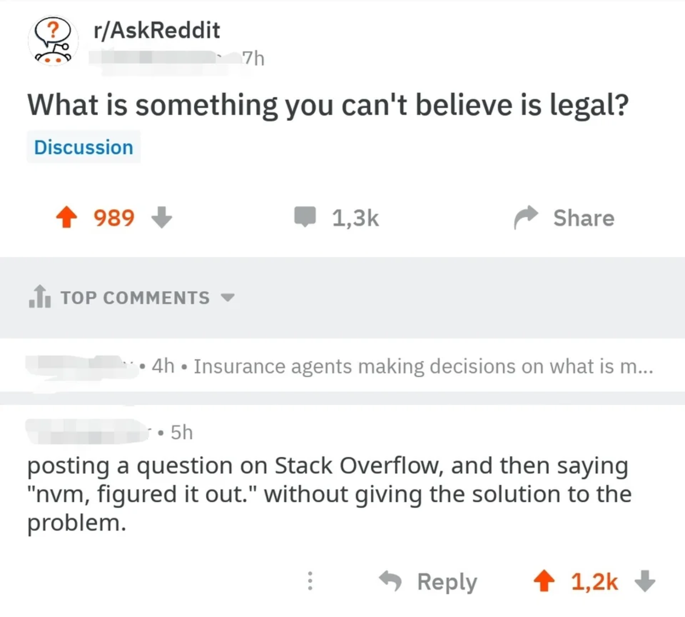

Stack Overflow, which you probably don’t need an introduction to, is one of the largest open source resources for technical solutions and is often the go-to website for troubleshooters. It is also infamous for its userbase, which has a reputation of mocking people when they post threads of poor quality. Do not the cat, we can learn from their mistakes so their suffering won’t be in vain.
First of all, most problems wouldn’t even need to be posted, as chances are someone else has run into the exact same (or very similar) problem in the past and has already posted it onto Stack Overflow (and that someone has found a good solution to it). A bit of effort in sending a quick query to your search engine of choice can save you much time and scrutiny.
In February, I was writing a python script to combine multiple signed PDF documents together at my workplace. Adobe Acrobat didn’t allow the manipulation of signed PDFs so the only way my coworkers found around this issue was to use the print functionality built into windows to print out the signed PDFs onto multiple unsigned PDFs and then combining them from there. This was a somewhat tedious process as they would have to print and name n files for each combining process where n is the number of signed documents which needed to be combined. Naturally I turned to the easiest programming language I know with good package usability.
One of the problems is to combine multiple files together once they’re editable. Look at the following thread
I am using python, and I want to combine two PDF pages into a single page. My purpose is to combine these two pages into one, not two PDFs. Is there any way to combine the two PDFs one by one? I don't want to merge these two. Without overlapping, is there any way to combine them?
Note how the lack of clarity and research confused the people trying to help. The poster didn’t include a sufficiently detailed explanation of what the goal is, and also left out any code snippets or diagrams. The poster also left out any links to indicate that preliminary research has been made to solve the problem. The repliers only had the term ‘stitch’ to go on, which some interpreted as the imaging technique where multiple incomplete pictures are joined at the borders or overlapped to form a more complete image.
Did you see that topic to inspire you some solutions? –
AvyWam
Apr 13, 2019 at 0:15
With what I have, I would perhaps turn them into images with python, then join them in Inkscape and then export it to a PDF file. –
Harry
Apr 7 at 2:21
If I understood you correctly, you want to stitch two pages this way:
---------
| | |
| 1 | 2 |
| | |
---------
The pyPDF3 module allows you to do this.
from PyPDF3 import PdfFileWriter, PdfFileReader
from PyPDF3.pdf import PageObject
pdf_filenames = ["out_mitry.pdf", "out_cdg.pdf"]
input1 = PdfFileReader(open(pdf_filenames[0], "rb"), strict=False)
input2 = PdfFileReader(open(pdf_filenames[1], "rb"), strict=False)
page1 = input1.getPage(0)
page2 = input2.getPage(0)
total_width = page1.mediaBox.upperRight[0] + page2.mediaBox.upperRight[0]
total_height = max([page1.mediaBox.upperRight[1], page2.mediaBox.upperRight[1]])
new_page = PageObject.createBlankPage(None, total_width, total_height)
# Add first page at the 0,0 position
new_page.mergePage(page1)
# Add second page with moving along the axis x
new_page.mergeTranslatedPage(page2, page1.mediaBox.upperRight[0], 0)
output = PdfFileWriter()
output.addPage(new_page)
output.write(open("result.pdf", "wb"))
Share
Follow
answered Mar 5, 2021 at 21:16
Alexander Nikitin
30644 silver badges12
Now look at this thread concerning the process of printing to a file:
As the title says, I am trying to take a PDF and print it to a new PDF.
The reason I want to do this is that I am dealing with bulk PDFs and some of them are encrypted with code 4 which PyPDF2 cannot decrypt. So, I am trying to use Microsoft Print to PDF so that I can actually load it with PyPDF2's PdfFileReader and cut off some unnecessary pages.
This is what I have so far:
import win32print as wp
printer = wp.OpenPrinter('Microsoft Print to PDF')
print_job = wp.StartDocPrinter(printer, 1, (".\in.pdf", ".\out.pdf", "RAW"))
wp.StartPagePrinter(printer)
But, I get this error:
----> 2 print_job = wp.StartDocPrinter(printer, 1, (".\in.pdf", ".\out.pdf", "RAW"))
3 wp.StartPagePrinter(printer)
error: (5, 'StartDocPrinter', 'Access is denied.')
Does anyone know how I can fix this? Perhaps even a completely different approach to my issue.
I also referenced this post... no luck with it: stackoverflow.com/questions/37578005/… –
Nikolas
Jun 9, 2022 at 18:30
As opposed to the other post, this poster has a much clearer objective and reasoning so that the repliers have a clearer understanding of the problem. The packages used and errors are both included in code snippets. The poster also referenced another thread on Stack Overflow to show that another solution has been attempted but has failed so far. One of the repliers left a high effort response which I ended up including in my own code:
I think I am a little late for the answer but if you are still looking for an answer then you can use this method. This is a different approach but since you are okay with it so I am providing it. Here's the code:
import webbrowser
import pyautogui
import time
import pyperclip
import os
import win32print
def print_job_checker():
"""
Prints out all jobs in the print queue every 5 seconds
"""
jobs = [1]
while jobs:
jobs = []
time.sleep(5)
for p in win32print.EnumPrinters(win32print.PRINTER_ENUM_LOCAL, None, 1):
flags, desc, name, comment = p
phandle = win32print.OpenPrinter(name)
print_jobs = win32print.EnumJobs(phandle, 0, -1, 1)
if print_jobs:
jobs.extend(list(print_jobs))
for job in print_jobs:
print("printer name => " + name)
document = job["pDocument"]
print("Document name => " + document)
win32print.ClosePrinter(phandle)
print("No more jobs!")
# opens the input pdf in the web browser
webbrowser.open('in.pdf')
time.sleep(2)
# enters the password for your pdf
pyautogui.typewrite("your_pdf_password")
time.sleep(0.44)
pyautogui.press("enter")
time.sleep(1)
# press ctrl+p ket
pyautogui.hotkey('ctrl', 'p')
time.sleep(3)
# moves cursor to the coordinate where 'Print' button appeared
pyautogui.moveTo(338, 489, duration=2, tween=pyautogui.easeInOutQuad)
time.sleep(0.88)
# perform left mouse click on print button
pyautogui.leftClick()
time.sleep(2)
# types the filename of output pdf
pyautogui.typewrite("new_file_name")
time.sleep(1)
# directory where you will save your output file
save_dir = "D:/folder/name"
# creates the output dir if doesn't exists
if not os.path.exists(save_dir):
os.makedirs(save_dir)
time.sleep(1)
# copy output dir path (save_dir) to clipboard
pyperclip.copy(save_dir)
# moves cursor to the coordinate where address bar of directory appeared
pyautogui.moveTo(569, 65, duration=2, tween=pyautogui.easeInOutQuad)
# perform left mouse click on the bar to edit the path
pyautogui.leftClick()
time.sleep(0.41)
# click ctrl+v keys so which pastes the output dir (save_dir) path
pyautogui.hotkey('ctrl', 'v')
time.sleep(0.71)
# press enter
pyautogui.press("enter")
time.sleep(0.23)
# moves cursor to the coordinate where 'Save' button is
pyautogui.moveTo(747, 558, duration=2, tween=pyautogui.easeInOutQuad)
# perform left mouse click on 'Save' button
pyautogui.leftClick()
# waits until the print job is complete
print_job_checker()
time.sleep(0.96)
# performs ctrl+w key press which is shortcut for closing the current tab in browser but since it has only 1 tab
# it will close the complete browser
pyautogui.hotkey('ctrl', 'w')
Let me explain what the program does. First it opens the input pdf in a web browser, then presses ctrl+p to open the print dialog but here the system print dialog will appear not the browser's own dialog (I will explain below how you can get it beforehand) then the cursor will move on the button where 'Print' button is and then perform left click on it (I will explain below how you can get the exact coordinates of the buttons beforehand). Then the dialog box will appear asking you the path where to save the file and also the file name, so the program will move the cursor to the top bar in this dialog box where path is written and will edit it and paste the path where you want to save the file and then pres 'enter' so that it goes to that path and then move the cursor to 'Save' button and perform a left click on it and then wait till the print job is complete and then close the browser.
You can put it in a for loop to handle multiple files, just make sure that output file name should be different for each, otherwise it will ask (when you save the file) if you want to replace the file and you will have to manage that as well.
We will be using Firefox as browser. So kindly install it first. And in firefox open settings and tick 'Always ask you where to save files'. So that you can change the output file location and its name.
Q1) How the system print dialog will appear instead of browser's own dialog?
A) For that go to address bar on the top in the firefox browser and then type about:config and press enter it will ask you to be careful, just press 'accept the risk and continue'. We will be changing default preferences of the browser through this. In the 'Search preference name' bar type print_printer and make sure its value is Microsoft Print to PDF (this will use Microsoft Print to PDF as your default printer). Then type print.prefer_system_dialog in 'Search preference name' and set its value to true (this will make sure that system print dialog appears everytime you print something from the browser instead of browser's own print dilaog). There are other settings related to Microsoft Print to PDF that you can change as well if you want, they will all start with print.printer_Microsoft_Print_to_PDF.something. But these 2 are necessary. You can change them back later if you want.
Q2) How to get the exact coordinates where the buttons will appear beforehand?
A) For this you need to perform this process manually just once to get the coordinates. First run this program:
import pyautogui
pyautogui.displayMousePosition()
This will display the live position of your cursor in the output. Now open any pdf in your browser then press ctrl+p, the system print dialog will appear, hover your cursor over the print button and switch to the output of the above program (using alt+tab) without moving your cursor, note down these coordinates. Now click on it and the dialog box will appear asking you the file name of the output file and the directory where you want to save it. Now hover your cursor over the address bar at the top just before that drop down arrow in the address bar and get the coordinates. And now hover the cursor over 'Save' button and get the coordinates.
I used time.sleep() everywhere, it makes the automation a little human and avoid errors if some part takes a little extra time to complete.
Replace the coordinates I used in the program with the coordinates you got and now you can run the program.
I think I covered almost everything, still if you have any doubts and if the program does not work, you can let me know.
Asking good questions on Stack Overflow doesn’t always lead to a good answer, but if people decide to drop by to formulate a response, good questions help avoid misappropriated effort into solving the wrong problem. Also, it will probably reduce the chances of you getting patronized with a link to basic documentation. Last, if you manage to solve your problem on your own after posting the question, for the love of yourFavoriteDeity, do not edit your post with “nevermind I figured it out” without following up with your solution. Do not give people the frustration that their problem is solved but is kept hidden from them.
Remember that Stack Overflow is a forum meant for solving general (and sometimes a bit more technical) problems with code. When diving into extremely niche arcane subjects ( e.g. undocumented behavior in the character animator in Unity 2019.4.31f1 ), forums used to hold that niche, but have died around a decade ago when Discord took off. It might be better to find individuals in the community or professional sphere to get where the discourse happens.